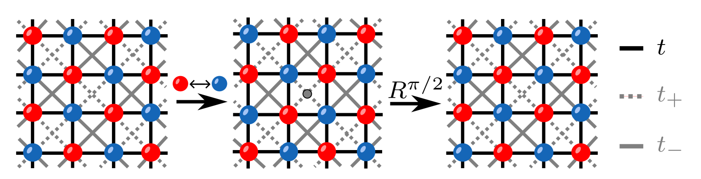
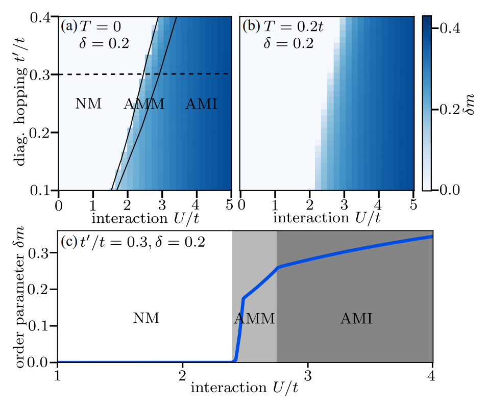

Self-Consistent Mean-Field Theory for the Hubbard Model
Model
Consider the square-lattice Fermi–Hubbard model with Hamiltonian \begin{equation} \hat H = -\sum_{i,j,s} t_{ij}\left(c^\dagger_{is}c_{js}+\mathrm{H.c.}\right) +U\sum_i n_{i\uparrow}n_{i\downarrow}, \label{eq:das_hubbard} \end{equation} Here \(s=\uparrow,\downarrow\), and \(U\) is the Hubbard interaction. We generally consider half filling, for which each site contains one electron on average. The nearest-neighbor hopping is \(t\), while the diagonal next-nearest-neighbor hopping is anisotropic: \begin{equation} t_{\pm}=t'(1\pm \delta). \end{equation} Along the \((1,1)\) direction, the \(A\) sublattice (red) has \(t_-\), whereas the \(B\) sublattice (blue) has \(t_+\). The assignments are reversed along the \((1,-1)\) direction.

Order Parameter
On the square lattice, the system develops \((\pi,\pi)\) magnetic order. To describe it, introduce the order parameter \begin{equation} \delta m = \frac{1}{4N}\sum_r \left\langle n_{rA\uparrow}-n_{rA\downarrow} -n_{rB\uparrow}+n_{rB\downarrow} \right\rangle , \label{eq:delta_m_def} \end{equation} The occupations can therefore be written as \begin{equation} \langle n_{r\lambda s}\rangle = \frac{n}{2}+\delta m(-1)^{\lambda+s}, \label{eq:das_occupation} \end{equation} Here \(\lambda=0,1\) denotes the \(A,B\) sublattices, and \(s=0,1\) denotes \(\uparrow,\downarrow\), respectively. A nonzero \(\delta m\) makes the \(\uparrow\) occupation larger on the \(A\) sublattice and the \(\downarrow\) occupation larger on the \(B\) sublattice, while the total magnetic moments cancel.
Mean-Field Decoupling of the Hubbard Term
The Hubbard interaction is a four-operator term. We apply the mean-field approximation \begin{equation} U n_{i\uparrow}n_{i\downarrow} \simeq U\left( \langle n_{i\uparrow}\rangle n_{i\downarrow} + n_{i\uparrow}\langle n_{i\downarrow}\rangle - \langle n_{i\uparrow}\rangle \langle n_{i\downarrow}\rangle \right), \end{equation} where spin-flip terms have been neglected. After dropping the constant term, \begin{equation} \hat H_U^{\rm MF} = U\sum_{r,\lambda} \left( \langle n_{r\lambda\downarrow}\rangle n_{r\lambda\uparrow} + \langle n_{r\lambda\uparrow}\rangle n_{r\lambda\downarrow} \right). \end{equation} Substituting \begin{equation} \langle n_{r\lambda s}\rangle = \frac{n}{2}+\delta m(-1)^{\lambda+s}, \end{equation} gives \begin{equation} \hat H_U^{\rm MF} = U\frac{n}{2}\sum_{r,\lambda,s}n_{r\lambda s} -U\delta m \sum_{r,\lambda,s} (-1)^{\lambda+s}n_{r\lambda s}, \end{equation} The first term is the Hartree energy, which depends only on the particle number and can be absorbed into the chemical potential. Retaining only the second term and expanding it gives \begin{equation} \hat H_{\rm U2}^{\rm MF} = -U\delta m \sum_{r} \left( n_{rA\uparrow} -n_{rA\downarrow} -n_{rB\uparrow} +n_{rB\downarrow} \right), \end{equation} After a Fourier transform, \begin{equation} \hat H_{\rm U2}^{\rm MF} = -U\delta m\sum_{\bm{k}} \left( n_{\bm{k}A\uparrow} -n_{\bm{k}B\uparrow} -n_{\bm{k}A\downarrow} +n_{\bm{k}B\downarrow} \right). \label{eq:das_mf_exchange} \end{equation} Thus, within the mean-field approximation, the Hubbard interaction is equivalent to assigning opposite spin-dependent onsite energies to the \(\uparrow,\downarrow\) states on the two \(A,B\) sublattices. For \(\delta m>0\), the \(\uparrow\) state has lower energy and the \(\downarrow\) state has higher energy on the \(A\) sublattice; the ordering is reversed on the \(B\) sublattice. In terms of Pauli matrices, \begin{equation} \hat H_{\rm U2}^{\rm MF} = - U\delta m \sum_{\bm{k}} \Psi^\dagger_{\bm{k}} \sigma_z \tau_z \Psi_{\bm{k}}, \end{equation} where \(\tau_z\) acts in sublattice space and \(\sigma_z\) acts in spin space, with basis \begin{equation} \Psi_{\bm{k}} = \left( c_{\bm{k}A\uparrow}, c_{\bm{k}B\uparrow}, c_{\bm{k}A\downarrow}, c_{\bm{k}B\downarrow} \right)^T . \end{equation}
The complete mean-field Hamiltonian is \begin{equation} \hat H^{\rm HF} = \sum_{\bm{k}}\Psi^\dagger_{\bm{k}} \begin{pmatrix} H_\uparrow(\bm{k})&0\\ 0&H_\downarrow(\bm{k}) \end{pmatrix} \Psi_{\bm{k}} . \label{eq:das_hf_block} \end{equation} Each spin block is a \(2\times2\) matrix, \begin{equation} H_s(\bm{k})= \begin{pmatrix} h_{AA,s} & h_{AB,s}\\ h_{BA,s} & h_{BB,s} \end{pmatrix}, \end{equation} where \begin{align} h_{AA,s} &=-2t_-\cos(\bm{k}\cdot\mathbf a_1)-2t_+\cos(\bm{k}\cdot\mathbf a_2)-(-1)^sU\delta m,\\ h_{BB,s} &=-2t_+\cos(\bm{k}\cdot\mathbf a_1)-2t_-\cos(\bm{k}\cdot\mathbf a_2)+(-1)^sU\delta m,\\ h_{AB,s}&=h_{BA,s}=-2t\cos(k_xa)-2t\cos(k_ya). \end{align} Here \(s=0\) denotes \(\uparrow\) and \(s=1\) denotes \(\downarrow\). \(U\delta m\) produces antiparallel magnetic moments, while \(t_+\neq t_-\) makes the crystal environments of the \(A/B\) sublattices inequivalent under an ordinary translation but related by a rotation. Both ingredients must be present for the system to be altermagnetic.
Self-Consistent Solution
As shown above, the mean-field Hamiltonian depends on the order parameter \(\delta m\), while \(\delta m\) is itself determined by the occupations of the mean-field eigenstates. The problem is therefore intrinsically self-consistent.
Before starting the self-consistent iteration, specify the parameters in Hamiltonian (1): \begin{equation} t,\quad t',\quad \delta,\quad U, \end{equation} together with the temperature \(T\) and filling \(n\). Then choose an initial order parameter \begin{equation} \delta m^{(0)} \end{equation} At iteration \(\ell\) (with the first iteration labeled \(\ell=1\)), substitute the previous order parameter \(\delta m^{(\ell-1)}\) into the mean-field Hamiltonian. Because the Hamiltonian does not couple the two spin components, diagonalizing the two \(2\times2\) spin blocks gives the eigenvalues and eigenvectors: \begin{equation} H_s\left(\bm{k};\delta m^{(\ell-1)}\right) \varphi_{\bm{k}\nu s}^{(\ell)} = E_{\bm{k}\nu s}^{(\ell)} \varphi_{\bm{k}\nu s}^{(\ell)} , \label{eq:das_self_consistent_eigen} \end{equation} Here \(\nu=1,2\) is the band index within each spin block, while \(s=0,1\) denotes \(\uparrow,\downarrow\), respectively. The eigenvector is written as \begin{equation} \varphi_{\bm{k}\nu s}^{(\ell)} = \begin{pmatrix} u_{\bm{k}\nu s,A}^{(\ell)}\\ u_{\bm{k}\nu s,B}^{(\ell)} \end{pmatrix}, \qquad \left| u_{\bm{k}\nu s,A}^{(\ell)} \right|^2 + \left| u_{\bm{k}\nu s,B}^{(\ell)} \right|^2 =1. \end{equation} Next, determine the chemical potential. At finite temperature, the occupation of a single-particle level with energy \(E\) follows the Fermi–Dirac distribution \begin{equation} f_T(E-\mu) = \frac{1}{ \exp\left[(E-\mu)/T\right]+1 }, \label{eq:das_fermi_distribution} \end{equation} where \(k_{\rm B}=1\). Since half filling is imposed, \begin{equation} \braket{n_i} = \braket{n_{i\uparrow} + n_{i\downarrow}} = 1 , \end{equation} the chemical potential is determined by \begin{equation} \frac{1}{2N_k} \sum_{\bm{k},\nu,s} f_T\left( E_{\bm{k}\nu s}^{(\ell)}-\mu^{(\ell)} \right) = 1. \label{eq:das_self_consistent_density} \end{equation} Once \(\mu^{(\ell)}\) has been obtained, recalculate the order parameter: \begin{align} \delta m^{(\ell+1)} = \frac{1}{4N_k} \sum_{\bm{k},\nu,s} (-1)^s \left( \left| u_{\bm{k}\nu s,A}^{(\ell)} \right|^2 - \left| u_{\bm{k}\nu s,B}^{(\ell)} \right|^2 \right) f_T\left( E_{\bm{k}\nu s}^{(\ell)}-\mu^{(\ell)} \right). \label{eq:das_self_consistent_delta_m} \end{align} Self-consistency is reached when \begin{equation} \delta m^{(\ell+1)} \approx \delta m^{(\ell)} . \label{eq:das_self_consistent_fixed_point} \end{equation}
Phase Diagram: NM, AMM, and AMI
As \(U/t\) and \(T\) vary, the ground state undergoes transitions among a normal metal, an altermagnetic metal, and an altermagnetic insulator.

99
Purnendu Das, Valentin Leeb, Johannes Knolle, and Michael Knap, Realizing Altermagnetism in Fermi-Hubbard Models with Ultracold Atoms, Physical Review Letters 132, 263402 (2024). doi:10.1103/PhysRevLett.132.263402.